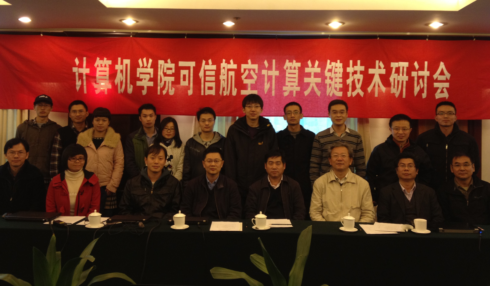

计算机学院可信航空计算关键技术研讨会 (2013-11-11)
2013年11月11日，计算机学院可信航空计算关键技术研讨会在北京世纪金源香山商旅酒店成功举行。计算机学院高小鹏副院长、马殿富教授、刘超教授、张莉教授、沈旭昆教授、曹庆华教授等20多名教师、学生参加了此次会议。

此次技术研讨会是2013年计算机学院可信航空计算方向的第二次会议，主要内容包括：计算机学院在可信航空计算方向的总体情况介绍、航空科学与技术国家实验室（筹）航空分布式高可信计算功能实验室规划、北航2013年可信航空计算方向基础科研业务费中期报告、可信航空计算关键技术报告等环节。会上马殿富教授首先对可信航空计算方向及航空分布式高可信计算功能实验室的规划做了做了总体介绍。随后，沈旭昆、张莉、刘超、孙自安、赵永望、姜博、万寒、丁嵘、黄迪等教师分别做了技术报告与讨论。
在北航基础科研业务费项目、航空分布式高可信计算功能实验室、软件开发环境国家重点实验室自主课题的牵引下，计算机学院已经在航空CPU、机载系统虚拟化、机载操作系统分析与验证、航空A级软件开发环境等方面展开了预先研究，并获得了多核操作系统、DO-178C A级软件、发动机控制软件等方向的民用飞机科研项目资助。